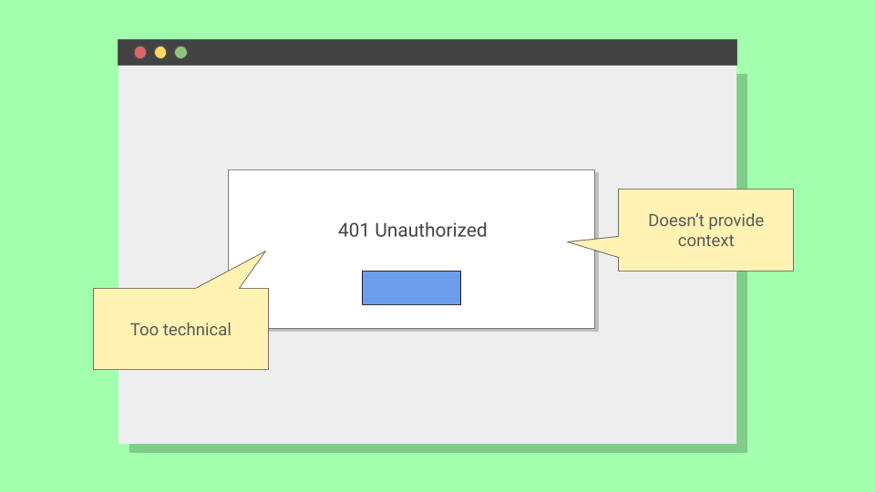

A/B Testing an Error Message
Sometimes the biggest wins hide in the smallest places. This is a methodology demonstration: how I would approach a single error message that's driving frustration and support tickets, and turn it into a recovery path.
Methodology Note
- Format: Demonstration
- Purpose: Show how I approach A/B testing and statistical validation
The Scenario
Imagine a SaaS platform that helps product teams manage release notes and sync content across tools like GitHub, JIRA, and Zendesk. The GitHub integration works fine most of the time, but occasionally the connection times out.
When it happens, users see: "401 Unauthorized"
Accurate, but a dead end. Users either abandon the workflow or open a support ticket. The question: can better copy help more users recover on their own?
Forming the Hypothesis
Before writing new copy, I would dig into why users fail. Support tickets tell you what's broken. Call recordings tell you how users think about it.
In this case, users likely understand authentication failed. They just don't know the fix is a simple reconnect. That gap between understanding and action is where UX copy lives.
The hypothesis: if the error message explains the issue and gives a clear next step, more users will reconnect GitHub on their own.
In A/B testing, I would set up a null hypothesis (H₀): there's no difference between the two messages. The goal is to see whether the new copy produces results unlikely to occur if that null hypothesis were true.
Designing the Test
The proposed message: "There was an issue with authentication. Please reconnect your GitHub account."
I would partner with a data scientist and engineer to split traffic 50/50 between the old and new messages.
Before launching, I would use a sample size calculator (like Evan Miller's) to determine how long to run the test. With a minimum detectable effect of ~10 percentage points, 80% power, and 0.05 significance, I would need roughly 800-900 users per group. Depending on error frequency, that might take two weeks.
Analyzing Results
Once the test reaches the target sample size, I would compare recovery rates between groups. Here's what a successful result might look like:

With results like these, I would check:
- P-value: Is it under 0.05? If so, results this extreme would be unlikely if there were no real difference.
- Confidence interval: Does the range exclude zero? A 95% CI of +3.5pp to +16.7pp means you're 95% confident the true effect falls somewhere in that range.
I would also check for secondary signals: did support ticket volume drop during the test period? That kind of qualitative confirmation strengthens the case.
When I Wouldn't A/B Test
A/B testing is a tool, not a religion. I wouldn't use it when:
- Low traffic: If you can't reach sample size in a reasonable timeframe, the test drags on and external factors contaminate results.
- High-stakes flows: If a bad variant causes real harm (failed payments, data loss), the risk isn't worth the learning.
- Qualitative research already shows a clear winner: If 8 out of 10 usability participants fail on the same step, you don't need statistical significance to act.
Knowing when not to test is as important as knowing how.
The Same Rigor, Different Methods
A/B testing isn't always possible, but the statistical thinking applies everywhere. In my empty state framework work, I used Fisher's exact test to validate usability findings before scaling. In terminology research, chi-square tests and weighted scoring measurably reduced support tickets.
The method matters less than the mindset: design tests that can actually prove something, then let the numbers decide.